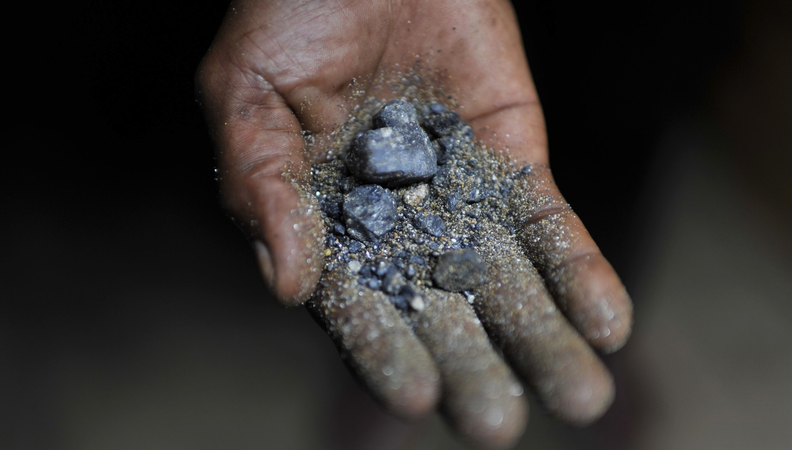

| Piedra Roja | Mineria ilegal del oro | Explotacion del oro | Explotacion del Coltan | Explotacion de la Minería |
EL COLTAN |
|

|
|
El coltan es un mineral que esta compuesto por materiales que estan acabando con el mundo, es curioso ya que
con este material hemos podido avanzar en la tecnologia y en la ciencia, pero es terrible para el medio ambiente,
cuendo es extraido le hace un gran daño a la tierra, al medio ambiente y al agua, la vuelve no potable, y todo esto
es lo que necesitamos para vivir a diario, este material lo encontramos en cosas tan comunes como: Los televisores,
los radios, los equipos de musica, audifonos, entre otros, pero para lo que mas es utilizado es para algo que vemos
muy seguido en las calles, LOS CELULARES, el Coltan tiene caracterizticas como que es resitente a altos grados de
temperatura, y no se oxida facilmente, pero tambien tiene cosas malas como que no se puede reutilizar, entonves aca
viene la pregunta reflexiva, ¿Es necesario cambiar de celular cada 6 meses? Para los que cuidan el medio ambiente no,
puede que saquen celulares fabulosos a cada rato, pero en un futuro si se nos acaban nuestros recursos no vamos a
necesitar un celular ni nos servira para comer, beber o algo por el estilo. |